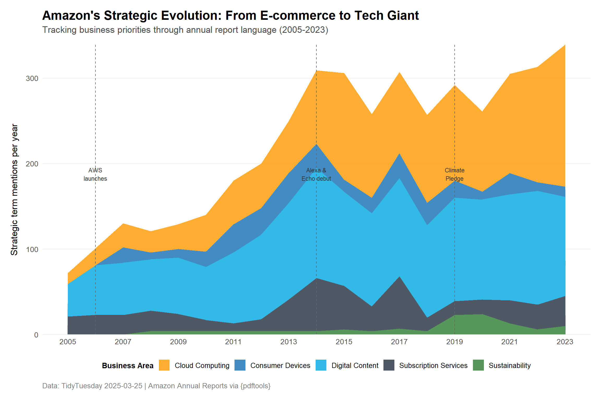

This dataset contains text extracted from Amazon’s annual reports (2005-2023). The PDFs were processed using the {pdftools} R package and analyzed by community contributor Gregory Vander Vinne. Stop words (common words like “and,” “the,” “a”) have been removed from the data. An annual report is essentially a summary of the company’s performance over the past year. It includes details on how well the company did financially, what goals were achieved, and what challenges it faced.
The readme proposes three research directions:
Linguistic evolution: How have the words used in annual reports changed over time?
Sentiment analysis: Are there meaningful changes in sentiment from year to year?
Word co-occurrence: Which words are likely to appear together in the same annual report?
Loading necessary packages
My handy booster pack that allows me to install (if needed) and load my usual and favorite packages, as well as some helpful functions.
raw <- tidytuesdayR::tt_load('2025-03-25')report_words <- raw$report_words_clean %>%mutate(year =as.numeric(year))
Exploratory Data Analysis
The my_skim() function is a modified version of the skimr::skim() function that returns the number of missing data points (cells as NA) as well as the inverse (e.g.: number of rows that are notNA), the count, minimum, 25%, median, 75%, max, mean, geometric mean, and standard deviation. It also generates a little ASCII histogram. Neat!
Dataset Structure
# Basic structurecat("Total word occurrences:", nrow(report_words), "\n")
# Words per yearwords_per_year <- report_words %>%count(year, name ='total_words')my_skim(words_per_year %>%select(total_words))
Data summary
Name
words_per_year %>% select…
Number of rows
19
Number of columns
1
_______________________
Column type frequency:
numeric
1
________________________
Group variables
None
Variable type: numeric
skim_variable
n_missing
complete_rate
n
min
p25
med
p75
max
mean
geo_mean
sd
hist
total_words
0
1
19
18205
20474
21845
22919
25019
21664.53
21592.95
1792.38
▃▇▇▇▃
The dataset contains 411,626 individual word occurrences spanning 19 annual reports (2005-2023), with 7,723 unique words. Each report contains approximately 20,000-25,000 words after stop-word removal, with recent years (2022-2023) showing slightly higher word counts.
# A tibble: 20 × 2
word n
<chr> <int>
1 cash 3967
2 million 3708
3 net 3704
4 tax 3596
5 december 3486
6 sales 3275
7 income 3119
8 financial 2982
9 stock 2939
10 operating 2887
11 including 2468
12 services 2454
13 assets 2297
14 consolidated 2250
15 costs 2087
16 based 2076
17 securities 2025
18 statements 2016
19 related 1948
20 customers 1916
Financial Language Dominates
The most frequent words are overwhelmingly financial: “cash,” “million,” “net,” “tax,” “income,” “stock,” “assets.” This reflects the mandatory financial disclosure sections of annual reports. More interesting strategic insights will come from tracking changes in vocabulary over time rather than absolute frequency.
Vocabulary Evolution: Early vs. Recent Years
# Words unique to different erasearly_words <- report_words %>%filter(year <=2010) %>%distinct(word) %>%pull(word)recent_words <- report_words %>%filter(year >=2019) %>%distinct(word) %>%pull(word)early_only <-setdiff(early_words, recent_words)recent_only <-setdiff(recent_words, early_words)cat("Words unique to early period (2005-2010):", length(early_only), "\n")
Words unique to early period (2005-2010): 1056
cat("Words unique to recent period (2019-2023):", length(recent_only), "\n")
The recent period (2019-2023) introduced 2,225 new words compared to just 1,056 unique to the early period (2005-2010). This 2.1x increase suggests Amazon’s business complexity has grown dramatically—more product lines, more geographies, more strategic initiatives, and more regulatory concerns all demanding new language.
Notable recent additions include: “pandemic,” “climate,” “sustainability,” “alexa,” “narratives,” and “jeff” (likely Bezos’ transition to executive chairman in 2021).
Tracking Amazon’s Strategic Pivots Through Buzzwords
Annual reports are carefully crafted documents. Every word choice signals strategic priorities. Let’s track how Amazon’s language evolved across five major business dimensions:
# When did each category first appear significantly?first_appearance <- category_summary %>%filter(mentions >=5) %>%group_by(category) %>%slice_min(year, n =1) %>%arrange(year)cat("First significant mentions (≥5 occurrences):\n")
“Cloud” mentions exploded from near-zero before 2010 to becoming a dominant theme. AWS launched in 2006 but didn’t gain prominent report coverage until 2012-2014, when it became clear the cloud business was strategically critical. By 2023, cloud-related terms appear more frequently than device-related terms.
Sustainability’s Late Arrival
Climate and sustainability language barely existed before 2019. This reflects both societal pressure on tech giants and Amazon’s 2019 Climate Pledge announcement. The sharp uptick in sustainability vocabulary marks a deliberate strategic repositioning in response to stakeholder expectations.
Visualization
# Prepare data for streamgraph-style area plotplot_data <- category_summary %>%complete(year =2005:2023, category, fill =list(mentions =0)) %>%arrange(year, category)# Define category colors inspired by Amazon's brand and domaincategory_colors <-c("Cloud Computing"="#FF9900", # Amazon orange"Consumer Devices"="#146EB4", # Amazon blue"Subscription Services"="#232F3E", # Amazon dark"Digital Content"="#00A8E1", # Lighter blue"Sustainability"="#2E7D32"# Earth green)# Create plotggplot(plot_data, aes(x = year, y = mentions, fill = category)) +geom_area(alpha =0.8, position ='stack') +geom_vline(xintercept =c(2006, 2014, 2019),linetype ="dashed",color ="gray40",linewidth =0.4 ) +annotate("text", x =2006, y =180,label ="AWS\nlaunches",family ="sans", size =3, hjust =0.5, vjust =0, color ="gray20" ) +annotate("text", x =2014, y =180,label ="Alexa &\nEcho debut",family ="sans", size =3, hjust =0.5, vjust =0, color ="gray20" ) +annotate("text", x =2019, y =180,label ="Climate\nPledge",family ="sans", size =3, hjust =0.5, vjust =0, color ="gray20" ) +scale_fill_manual(values = category_colors) +scale_x_continuous(breaks =seq(2005, 2023, 2)) +scale_y_continuous(expand =c(0, 0)) +labs(title ="Amazon's Strategic Evolution: From E-commerce to Tech Giant",subtitle ="Tracking business priorities through annual report language (2005-2023)",x =NULL,y ="Strategic term mentions per year",fill ="Business Area",caption ="Data: TidyTuesday 2025-03-25 | Amazon Annual Reports via {pdftools}" ) +theme_minimal(base_size =13, base_family ="sans") +theme(plot.title =element_text(face ="bold", size =18, margin =margin(b =5)),plot.subtitle =element_text(size =13, color ="gray30", margin =margin(b =15)),plot.caption =element_text(color ="gray50", hjust =0, margin =margin(t =10)),legend.position ="bottom",legend.title =element_text(face ="bold", size =11),legend.text =element_text(size =10),panel.grid.minor =element_blank(),panel.grid.major.x =element_blank(),panel.grid.major.y =element_line(color ="gray90", linewidth =0.3),plot.margin =margin(15, 15, 15, 15),axis.text =element_text(color ="gray30"),axis.title.y =element_text(margin =margin(r =10)) )

Interpretation
The stacked area chart reveals three distinct strategic eras:
2005-2011: E-commerce foundations Subscription services (Prime, launched 2005) dominate early language. Digital content grows steadily as Amazon expands beyond books. Cloud computing barely registers despite AWS launching in 2006.
2012-2018: Cloud awakening AWS coverage explodes as the cloud business proves massively profitable. Consumer devices (Kindle, then Alexa/Echo) create new product categories. The business becomes multi-dimensional.
2019-2023: Sustainability imperative Climate and sustainability language surge in response to stakeholder pressure and the 2019 Climate Pledge. All categories remain elevated, reflecting Amazon’s current complexity as cloud provider, device maker, content platform, and sustainability target.
The linguistic pattern mirrors Amazon’s P&L evolution: what started as an online bookstore now derives the majority of operating income from AWS, while managing growing scrutiny over environmental and social impact.
Final thoughts and takeaways
Annual reports are strategic documents designed to shape investor perceptions, but they can’t hide fundamental business shifts. Amazon’s language evolved from simple e-commerce vocabulary to complex tech-giant terminology because the underlying business transformed.
Three key insights:
Words follow revenue, with lag: AWS launched in 2006 but didn’t dominate report language until 2012-2014, when its profit contribution became undeniable. Strategic importance precedes linguistic prominence by several years.
Vocabulary explosions signal complexity: The 2.1x increase in unique words between early and recent periods isn’t just verbosity—it reflects genuine business diversification across cloud infrastructure, consumer hardware, digital services, logistics networks, and sustainability initiatives.
External pressure shapes language: The sharp 2019 sustainability inflection wasn’t organic—it responded to activist investors, employee protests, and public scrutiny. Amazon’s linguistic choices reveal which stakeholder pressures management takes seriously.
For text analysts: corporate annual reports offer rich time-series data for tracking strategic evolution. The key is identifying domain-specific terminology that signals actual business pivots rather than generic buzzwords. Amazon’s shift from “fulfillment” (2005-2010) to “infrastructure” (2015+) to “climate” (2019+) tells the company’s strategic story more clearly than any executive summary.
The linguistic record is clear: Amazon is no longer an e-commerce company that happens to run cloud servers. It’s a cloud infrastructure provider that happens to run a retail operation—and it’s racing to convince stakeholders it’s a responsible corporate citizen too.